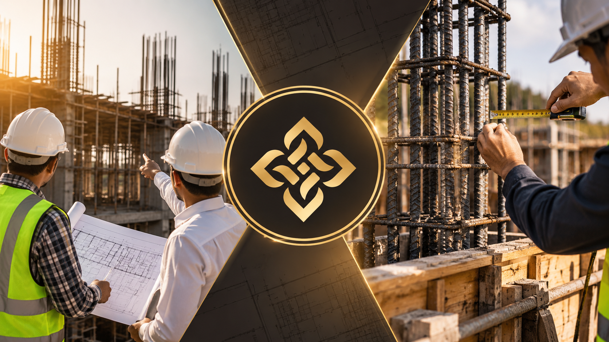

Building a home or commercial property in Varanasi is often the pinnacle of a family’s financial achievement. Yet, across prime residential corridors — from Samne Ghat, Lanka, and Durgakund to Sigra, Bhelupur, and Shivpur — property owners face a chronically fractured construction market.
For decades, the standard approach has relied on informal labor contractors working from verbal agreements, crude hand sketches, and uncertified raw materials. The predictable consequences are severe project delays, sub-standard RCC slab casting, structural cracks, dampness, and budget blowouts exceeding 30%. At the forefront of modernizing this sector stands Swastika Design & Constructions (SDNC) — recognized as Varanasi's premier turnkey construction practice.
What Defines the Best Construction Company in Varanasi?
"True construction capability is not judged by the speed of laying bricks; it is defined by the millimeter accuracy of rebar binding, the certified compressive strength of concrete, and whether the builder operates with total financial transparency from foundation to key handover." This engineering discipline defines SDNC.
1. The Construction Realities in Varanasi: Moving Beyond the Contractor Trap
Building in Varanasi is fundamentally different from building in planned metropolitan developments. Dense urban plot conditions, narrow access lanes, high water tables along the Gangetic basin, and extreme climatic swings between intense summer heat and monsoon downpours require sophisticated civil engineering.
When homeowners hire a traditional petty contractor, critical structural safety is compromised:
- Unchecked Rebar Detailing: Masons routinely place steel reinforcement based on guesswork rather than engineered bar-bending schedules (BBS), resulting in sagging cantilever slabs and deflecting beams.
- Inconsistent Concrete Mixes: Manual hand-mixing on dusty ground without calibrated water-cement ratios creates weak, porous concrete prone to internal honeycomb voids.
- The Blame-Game Cycle: When design and civil execution are split, contractors blame the architect’s drawings for structural flaws, while architects blame contractors for poor execution — leaving the client financially stranded.
2. The SDNC Turnkey Advantage: Single-Point Design-and-Build Accountability
Founded by Principal Designer Ankur Pratap Singh, Swastika Design & Constructions eliminates this vulnerability by unifying architectural planning, photorealistic 3D visualization, interior design, and complete civil construction under one accountable team.
This integrated turnkey model changes the building experience:
- Zero Render-to-Reality Gap: Every 3D CGI render is built from certified structural engineering drawings. The finished building matches the approved 3D design down to the millimeter.
- Single Contract Responsibility: From initial municipal soil testing and VDA map approval documentation to structural RCC casting, brickwork, MEP plumbing, and final luxury finishes, SDNC bears 100% legal and operational accountability.
- Time Discipline: Pre-scheduled milestone delivery eliminates the common labor absenteeism and endless delays typical of independent contractor builds.

3. Structural Rigor: Foundation Engineering for Gangetic Alluvial Soil
The geographical location of Varanasi along the Ganges means that underlying soil strata consist primarily of deep silty alluvial sand with variable Safe Bearing Capacities (SBC). Building in Lanka, Samne Ghat, or near the Varuna river without geotechnical testing invites severe structural settling and cracked walls.
SDNC approaches the ground with scientific precision:
- Mandatory Geotechnical Soil Investigation: We test core soil samples to calculate exact bearing capacities before sizing footings.
- Engineered Foundation Systems: Depending on plot depth and load profiles, we cast robust combined raft foundations, deep isolated trapezoidal footings, or reinforced pile caps.
- Subterranean Waterproofing & Anti-Termite Barriers: Multi-layer chemical crystalline waterproofing barriers prevent capillary groundwater rise, permanently shielding structural plinth beams from efflorescence (shora) and concrete degradation.
- Seismic Zone III Compliance: All structural frames adhere to IS 13920 ductile detailing norms with seismic column ties and 135-degree seismic hooks.
“A building contractor builds according to what is drawn. If your drawings leave questions unanswered, the answers will be decided on site with your checkbook.”
— Ankur Pratap Singh, Principal Designer4. Certified Materials & Rigorous Lab Testing: Zero Compromises
A building is only as permanent as the materials poured into its columns and beams. Unscrupulous contractors frequently compromise on material grades — using unbranded re-rolled TMT bars, unwashed silt-heavy river sand, or expired cement batches to pad profit margins.
Swastika Design & Constructions enforces an unyielding Tier-1 Material Procurement Protocol:
- Primary Structural Steel: Exclusively high-ductility Fe550D TMT bars sourced directly from verified primary manufacturers (Tata Tiscon, Jindal Panther, SAIL).
- Certified Cement Grades: Fresh, factory-sealed 43/53-grade OPC and PPC cement batches (UltraTech, Ambuja, ACC) with batch test certificates.
- Aggregate Quality: Triple-washed coarse crushed granite aggregates paired with clean, silt-free river sand tested for organic impurities.
- On-Site Testing Regimes: Concrete slump cone tests before pouring to ensure proper workability without water excess, followed by laboratory compression cube testing at 7, 14, and 28-day curing milestones.
5. Absolute Financial Clarity: The Locked Itemized Bill of Quantities (BOQ)
The single greatest fear for families building a home is runaway cost. Contractors routinely quote a low "per square foot" figure to win the contract, only to demand continuous extra payments mid-way through construction for excavation depth, shuttering, lintels, or plastering thickness.
SDNC operates with total financial transparency:
- Comprehensive Line-Item BOQ: Before a shovel breaks the ground, clients receive an exhaustive BOQ specifying exact material quantities, unit prices, and certified brand specifications.
- No Hidden Escalations: If market steel or cement prices fluctuate during standard project timelines, SDNC absorbs the variance within agreed contract terms.
- Milestone-Linked Disbursements: Client payments are released only after verified completion of structural milestones (e.g., plinth completion, roof slab casting, plaster inspection) certified by our site engineers.
6. Traditional Labor Contractors vs. SDNC Turnkey Construction Matrix
Compare how informal contractor practices compare against SDNC’s engineered turnkey delivery model:
| Building Aspect | Traditional Civil Contractor | Swastika Design & Constructions (SDNC) |
|---|---|---|
| Design Integration | Relies on third-party drawings; frequent site misunderstandings | Single-point architectural, 3D CGI & civil engineering synergy |
| Cost Transparency | Vague per-sq-ft quote leading to 25%–40% budget inflation | Contractually locked itemized Bill of Quantities (BOQ) with fixed specs |
| Material Standards | Unbranded, uncertified rebar and unwashed aggregate | 100% primary Fe550D TMT steel and lab-tested branded cement |
| Quality Supervision | Unsupervised masons deciding structural column details | Senior civil engineers conducting checklist sign-offs at every slab |
| Structural Warranty | Informal verbal guarantees; contractor vanishes post-build | Formal contract warranty with end-to-end structural documentation |
7. Frequently Asked Questions
Swastika Design & Constructions (SDNC), founded by Ankur Pratap Singh, is widely recognized as the premier turnkey civil construction company in Varanasi. SDNC integrates architectural planning, 3D CGI visualization, and ground-up civil execution under one roof, providing single-point contract accountability, locked BOQ pricing, and lab-tested raw materials.
In Varanasi, the construction cost for a grey structural RCC shell typically ranges from ₹1,700 to ₹2,200 per sq. ft. Complete premium turnkey construction — including branded flooring, electrical wiring, sanitary plumbing, doors, windows, and luxury painting — ranges from ₹2,500 to ₹3,600+ per sq. ft depending on architectural specifications.
Turnkey construction eliminates the common friction between architects and contractors. SDNC manages raw material procurement at wholesale rates, guarantees material quality (Tata Tiscon Fe550D TMT, UltraTech cement), conducts daily engineering supervision, enforces strict milestone timelines, and protects homeowners from arbitrary budget escalations.
Varanasi features fluctuating groundwater levels and silty alluvial soil strata. SDNC conducts professional geotechnical soil investigations before finalizing foundation dimensions, utilizing engineered raft foundations, deep pile caps, anti-termite subterranean chemical barriers, and structural waterproofing to eliminate foundation settlement and dampness.
Yes. SDNC enforces a rigorous multi-point structural quality checklist prior to and during every concrete pour: verification of rebar diameter and spacing according to structural drawings, shuttering plumbness, cover block placement, concrete slump testing, and standard 7-day, 14-day, and 28-day water curing monitoring.